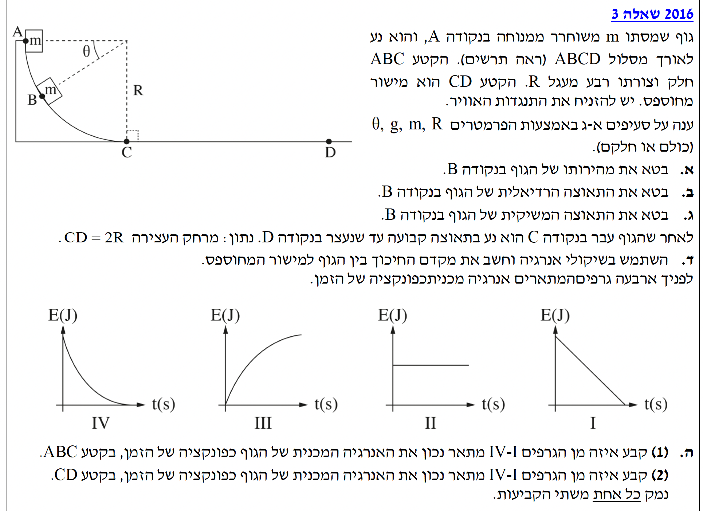
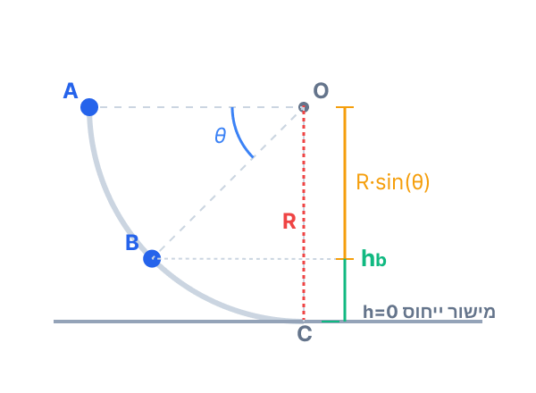
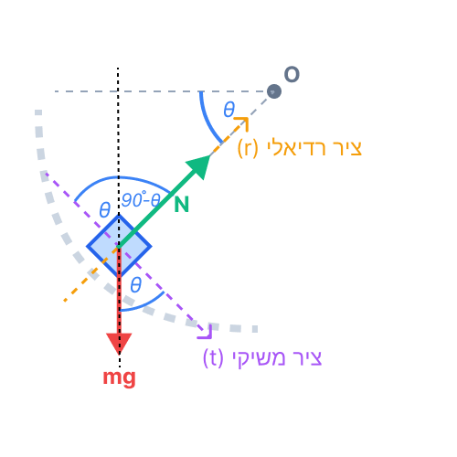
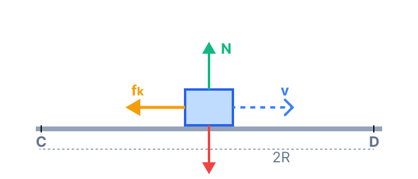

פתרון מלא - מכניקה 2016, שאלה 3
עודכן:
--- --:--:--
מבט כללי על השאלה
תלמידים יקרים, לפנינו שאלת בגרות קלאסית המשלבת תנועה מעגלית במאונך ושיקולי אנרגיה. אנו נפרק אותה שלב אחר שלב, נציג תרשימי כוחות מפורטים ונראה כיצד שימוש נכון במשפט עבודה-אנרגיה עושה סדר בבעיות מורכבות. שלב 0 - יחידות מידה: נניח כי כל הפרמטרים מיוצגים ביחידות התקניות (MKS): מסה בקילוגרמים (kg), מרחקים במטרים (m) ותאוצות ב- \(\text{m/s}^2\).

תמונת השאלה המקורית
לא נמצאה תמונה בשם question-image.png באותה תיקייה.
מה נתון: גוף שמסתו \( m \) משוחרר ממנוחה (מהירות התחלתית \( v_A = 0 \)) בנקודה A. הקטע ABC הוא רבע מעגל חלק (ללא חיכוך) שרדיוסו \( R \). המערכת מתוארת על ידי הזווית \( \theta \) ותאוצת הכובד \( g = 10 \text{ m/s}^2 \).
מה מחפשים: ביטוי למהירות הגוף \( v_B \) בנקודה B, כתלות בפרמטרים \( m, g, R, \theta \).
נוסחאות ועקרונות בשימוש:
חוק שימור אנרגיה מכנית (בהיעדר כוחות לא משמרים שמבצעים עבודה).
\[ U_G = mgh \]
\[ E_k = \frac{1}{2}mv^2 \]
\[ W_{\text{nc}} = \Delta E = 0 \]
הצבה ופתרון
בקטע ABC פועלים על הגוף כוח הכובד והכוח הנורמלי. הכוח הנורמלי תמיד מאונך לכיוון התנועה (רדיאלי למסלול) ולכן הוא אינו מבצע עבודה (\( W_N = 0 \)). מכיוון שאין חיכוך, האנרגיה המכנית במערכת נשמרת. נשווה את האנרגיה בנקודה A לאנרגיה בנקודה B.

תמונה (image-1.png) לא נמצאה.
נבחר את הרצפה (הקו CD) כמישור הייחוס שלנו שבו \( h = 0 \).
הגובה של נקודה A הוא בדיוק רדיוס המעגל \( R \). כדי למצוא את הגובה של נקודה B, נביט במשולש ישר הזווית שקודקודו במרכז המעגל O. המרחק האנכי ממרכז המעגל מטה עד לגובה של נקודה B הוא \( R\sin\theta \). מכיוון שמרכז המעגל נמצא בגובה \( R \) מהרצפה, הגובה של נקודה B ביחס לרצפה יהיה ההפרש: \( h_B = R - R\sin\theta \).
\[ E_A = E_B \]
\[ U_{G_A} + E_{k_A} = U_{G_B} + E_{k_B} \]
\[ mgR + 0 = mg(R - R\sin\theta) + \frac{1}{2}mv_B^2 \]
\[ mgR = mgR - mgR\sin\theta + \frac{1}{2}mv_B^2 \]
נחסר \( mgR \) משני האגפים ונקבל:
\[ mgR\sin\theta = \frac{1}{2}mv_B^2 \]
נצמצם את המסה \( m \) (נניח שאינה אפס) ונכפול פי 2, ולבסוף נוציא שורש:
\[ v_B = \sqrt{2gR\sin\theta} \]
שימו לב! כשאנו מגדירים את גובה מישור הייחוס - אנחנו הבוסים. יכולנו בהחלט לקבוע את נקודה A כ- \( h=0 \) (ואז \( h_B = -R\sin\theta \)). התוצאה הסופית של המהירות הייתה יוצאת זהה לחלוטין. העיקר להיות עקביים מרגע קביעת המישור ועד סוף המשוואה!
מה נתון: המהירות בנקודה B אותה מצאנו בסעיף הקודם היא \( v_B = \sqrt{2gR\sin\theta} \). המסלול בנקודה B הוא מעגלי בעל רדיוס \( R \).
מה מחפשים: את התאוצה הרדיאלית (הצנטריפטלית) \( a_R \) של הגוף בנקודה B.
נוסחאות ועקרונות בשימוש:
תאוצה רדיאלית (התאוצה שאחראית על שינוי כיוון המהירות).
\[ a_R = \frac{v^2}{R} \]
הצבה ופתרון
נציב ישירות את גודל המהירות בריבוע שמצאנו בסעיף א' לתוך נוסחת התאוצה הרדיאלית:
\[ a_R = \frac{v_B^2}{R} \]
\[ a_R = \frac{(\sqrt{2gR\sin\theta})^2}{R} \]
\[ a_R = \frac{2gR\sin\theta}{R} \]
הרדיוס \( R \) מצטמצם ונשארנו עם:
\[ a_R = 2g\sin\theta \]
כיוון התאוצה הוא לאורך הרדיוס כלפי מרכז המעגל O.
זכרו: בתנועה מעגלית שאינה קצובה (כמו כאן, המהירות משתנה בגלל כוח הכובד), יש לגוף שתי תאוצות - אחת רדיאלית שמשנה את הכיוון, ואחת משיקית (נחשב אותה בסעיף הבא) שמשנה את גודל המהירות. התאוצה הרדיאלית תלויה אך ורק במהירות הרגעית ברגע הנתון.
מה נתון: הגוף נמצא בנקודה B. כוח הכובד פועל עליו כלפי מטה.
מה מחפשים: את התאוצה המשיקית \( a_t \) של הגוף בנקודה B.
נוסחאות ועקרונות בשימוש:
החוק השני של ניוטון, המיושם הפעם על הציר המשיקי למסלול.
\[ \Sigma \vec{F} = m\vec{a} \]
הצבה ופתרון
כדי למצוא תאוצה מתוך כוחות, אנו חייבים לשרטט תרשים כוחות (FBD) מדויק עבור הגוף בנקודה B. על הגוף פועלים שני כוחות: כוח הכובד \( mg \) המכוון אנכית כלפי מטה, והכוח הנורמלי \( N \) המכוון מרדיאלית פנימה אל עבר מרכז המעגל O.

תמונה (image-3.png) לא נמצאה.
נבחר מערכת צירים המותאמת לתנועה ברגע זה: הציר הרדיאלי (r) והציר המשיקי (t) שכיוונו החיובי הוא בכיוון התנועה.
הרדיוס נמצא בזווית \( \theta \) מתחת לקו האופקי. מכיוון שהציר המשיקי מאונך לרדיוס, והאנך (כיוון כוח הכובד) מאונך לקו האופקי, הזווית בין כוח הכובד לציר המשיקי היא גם כן \( \theta \) (זוויות מתחלפות ומשלימות ל-90 מעלות, ראו שרטוט).
ניישם את החוק השני של ניוטון עבור הציר המשיקי. הכוח היחיד שיש לו רכיב בציר זה הוא כוח הכובד.
\[ \Sigma F_t = ma_t \]
\[ mg\cos\theta = ma_t \]
נצמצם את המסה משני אגפי המשוואה (הרי הגוף לא חסר מסה):
\[ a_t = g\cos\theta \]
זהירות ממלכודת ה"אוטומט"! תלמידים רבים מתרגלים שבפירוק כוחות במישור משופע או במסלול עגול, הרכיב המקביל או המשיק לתנועה הוא תמיד \( mg\sin\theta \). אבל בפיזיקה אסור לעבוד על טייס אוטומטי! חובה לשים לב איזו זווית בדיוק הוגדרה בשרטוט המקורי כ- \( \theta \) ולחקור את הגיאומטריה המקומית בעצמכם כדי לקבוע מהו הביטוי הנכון לכל רכיב. במקרה שלנו, בגלל האופן שבו \( \theta \) הוגדרה ביחס לאופק, דווקא פונקציית הקוסינוס היא זו שנותנת את הרכיב המשיקי. תמיד שרטטו משולש כוחות ובדקו!
מה נתון: לאחר שהגוף עובר את נקודה C הוא נע לאורך המישור האופקי המחוספס CD וגודל מהירותו קטן בהדרגה עד לעצירה המוחלטת בנקודה D. מרחק העצירה הוא \( CD = 2R \).
מה מחפשים: את מקדם החיכוך הקינטי \( \mu_k \) בין הגוף למישור. ההוראה דורשת להשתמש בשיקולי אנרגיה.
נוסחאות ועקרונות בשימוש:
משפט עבודה-אנרגיה, עבודת כוח קבוע, ומודל החיכוך הקינטי.
\[ W_{\text{nc}} = \Delta E = E_f - E_i \]
\[ W = F\Delta x\cos\alpha \]
\[ f_k = \mu_k N \]
הצבה ופתרון
בחרנו את הרצפה CD כמישור הייחוס (\( h=0 \)). ראינו בסעיף א' שהאנרגיה בנקודה A היא \( E_A = mgR \). מאחר וקטע ABC חלק, האנרגיה נשמרת עד לנקודה C. כלומר, האנרגיה המכנית הכוללת של הגוף בנקודה C שווה ל- \( E_C = mgR \) (וכולה אנרגיה קינטית).
הגוף נעצר בנקודה D. מכיוון שהוא על הקרקע (\( U_G = 0 \)) ומהירותו אפס (\( E_k = 0 \)), האנרגיה המכנית שלו ב-D היא אפס: \( E_D = 0 \).
נשרטט את הכוחות הפועלים על הגוף בקטע CD כדי לדעת אילו עבודות מבוצעות:

תמונה (image-4.png) לא נמצאה.
בציר האנכי אין תנועה ולכן הכוחות מאוזנים: \( N = mg \).
הכוח הלא-משמר היחיד שמבצע עבודה לאורך המסלול (שאורכו \( \Delta x = 2R \)) הוא כוח החיכוך הקינטי הפועל בניגוד לכיוון התנועה (זווית \( 180^\circ \)).
\[ W_f = f_k \cdot \Delta x \cdot \cos(180^\circ) \]
\[ W_f = (\mu_k N) \cdot (2R) \cdot (-1) \]
\[ W_f = -\mu_k mg \cdot 2R \]
על פי משפט עבודה-אנרגיה, עבודת כוח החיכוך שווה לשינוי באנרגיה המכנית מנקודה C לנקודה D:
\[ W_{\text{nc}} = E_D - E_C \]
\[ -2\mu_k mgR = 0 - mgR \]
נחלק את שני אגפי המשוואה בביטוי \( -mgR \):
\[ 2\mu_k = 1 \]
\[ \mu_k = 0.5 \]
קלי קלות בעזרת אנרגיה! חישבו כמה ארוך זה היה יכול להיות אם היינו עובדים עם כוחות וקינמטיקה - היינו צריכים למצוא את המהירות ב-C, לבנות משוואת מיקום-זמן, למצוא את התאוצה דרך הקינמטיקה ורק אז להציב בחוק השני של ניוטון כדי למצוא את החיכוך. משפט עבודה-אנרגיה מחבר בצורה ישירה ופשוטה בין ההתחלה, הסוף והעבודה שנעשתה בדרך!
מה נתון: ארבעה גרפים (I, II, III, IV) המתארים אפשרויות שונות לאנרגיה מכנית \( E(J) \) כפונקציה של הזמן \( t(s) \).
מה מחפשים: (1) איזה גרף מתאר נכון את האנרגיה בקטע ABC.
(2) איזה גרף מתאר נכון את האנרגיה בקטע CD.
יש לנמק אחת משתי הקביעות (אנו ננמק את שתיהן לצורך הלמידה).
נוסחאות ועקרונות בשימוש:
חוק שימור אנרגיה מכנית, והקשרים הקינמטיים של תנועה שוות-תאוצה.
\[ W_{\text{nc}} = \Delta E = 0 \]
\[ v = v_0 + at \]
\[ E_k = \frac{1}{2}mv^2 \]
הצבה ופתרון
(1) בקטע ABC:
המסלול מוגדר כחלק (ללא כוחות חיכוך). כוח הכובד הוא כוח משמר, והכוח הנורמלי מאונך לתנועה ולכן אינו מבצע עבודה. על פי חוק שימור אנרגיה מכנית, האנרגיה המכנית הכוללת של המערכת נשארת קבועה לאורך כל הקטע, מרגע השחרור ועד ההגעה לנקודה C.
הגרף היחיד שמראה ערך קבוע (קו אופקי שאינו משתנה עם הזמן) הוא גרף II.
בקטע ABC האנרגיה מתוארת על ידי גרף II.
(2) בקטע CD:
הגוף נע במישור אופקי ולכן האנרגיה המכנית שלו היא קינטית בלבד. לאורך קטע זה פועל כוח חיכוך קינטי קבוע נגד כיוון התנועה. לפי החוק השני של ניוטון, כוח קבוע גורם לתאוצה קבועה המנוגדת לכיוון המהירות, ולכן גודל המהירות קטן בקצב אחיד לפי המשוואה \( v(t) = v_C - at \).
האנרגיה המכנית תלויה במהירות בריבוע לפי הנוסחה:
\[ E(t) = E_k(t) = \frac{1}{2}m(v_C - at)^2 \]
מכיוון שהמהירות קטנה באופן ליניארי, הריבוע שלה (האנרגיה) יקטן באופן שאינו ליניארי, אלא בצורה של פרבולה. בנוסף, נתון כי הגוף נעצר לחלוטין בנקודה D הנמצאת על הקרקע, לכן בסוף התנועה האנרגיה המכנית שלו חייבת להיות בדיוק אפס.
הגרף שמתאר ירידה פרבולית שאינה ליניארית ומסתיימת באפס הוא גרף IV.
בקטע CD האנרגיה מתוארת על ידי גרף IV.
מלכודת נפוצה: כיוון שכוח החיכוך קבוע, תלמידים רבים נוטים לחשוב בטעות שהאנרגיה יורדת בקצב קבוע ובוחרים בגרף היורד כקו ישר (גרף I). אך זכרו שהאנרגיה הקינטית תלויה בריבוע המהירות! אמנם המהירות קטנה באותה כמות בכל שנייה (למשל יורדת מ-4 ל-3 ואז ל-2), אך הריבוע שלה לא מתנהג כך (הוא יורד מ-16 ל-9, ואז מ-9 ל-4 - אלו הפרשים שהולכים וקטנים). לכן גרף האנרגיה אינו קו ישר, אלא עקום המתמתן בהדרגה עד לעצירה המוחלטת, שבה האנרגיה מתאפסת לחלוטין.